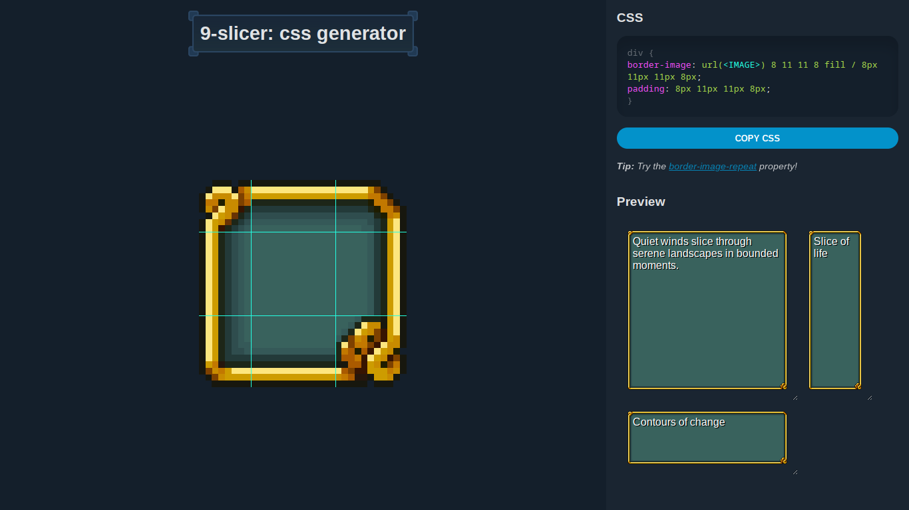
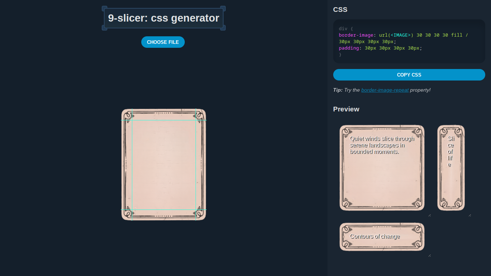
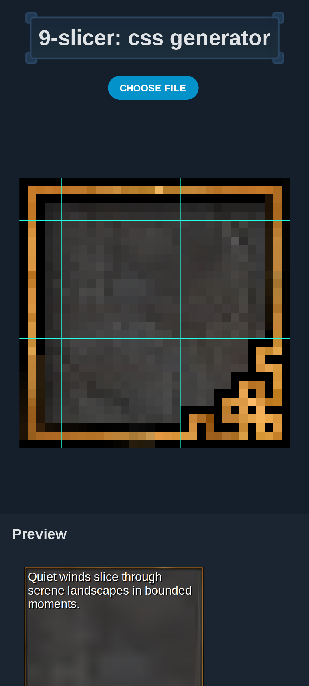
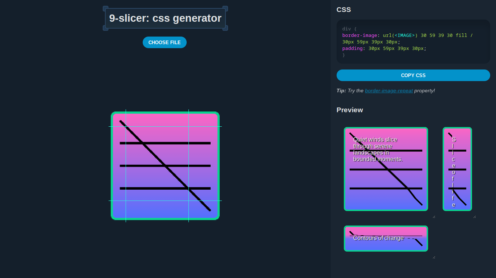
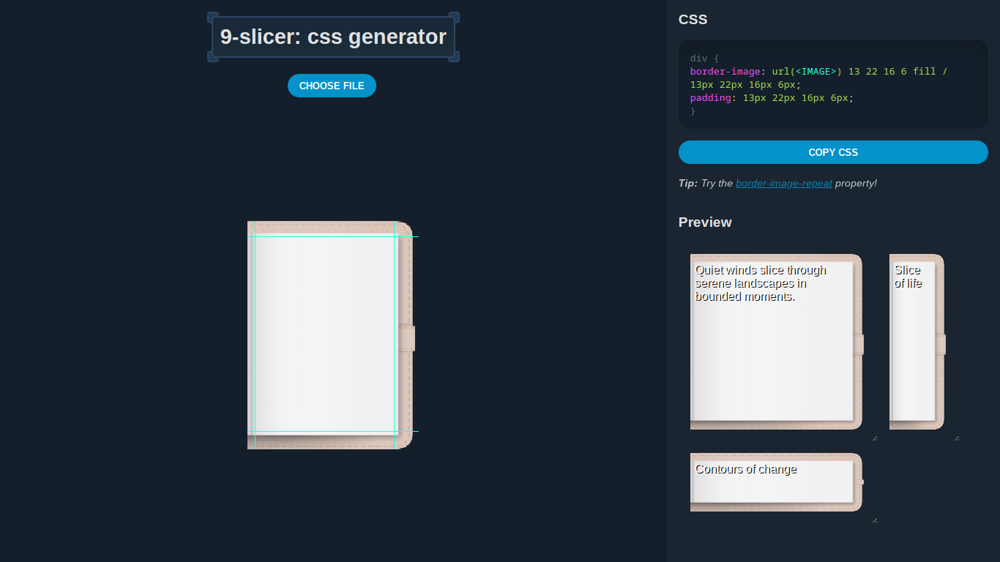

9-slicer

9-slicer is a tool used for generating CSS for rendering
9-slice
images.
Project details
Try online
- released
- 2024
- role
- creator
- platform
- Web
- tech
- CSS, JS
9-slice is an image resizing technique that preserves the borders
and corners of an image. This simplifies the process of creating scalable
and stylised UI components.
Screenshots




How it works
It uses the CSS property border-image to define the 9 scaling
zones.
The border-image property can do a lot more than the scale
9-slices of an image, but I chose to focus on the simple 9-slice use-case
because there are already many border image generators online that
expose the full range of border-image options but were not very
intuitive and simple. In any case, the user can edit the resulting CSS, and
I even included a tip for the user to explore the full possibilities of
border-image.
Some additional features would be good though, like zooming in and out! Or
snapping! Slice mirroring? Auto-detection of slices?? Useless AI assistant!?
I’ll check these out when/if I revisit the project.